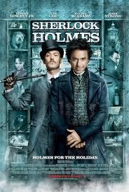

|  |
Orijinal İsmi: Sherlock Holmes
Vizyon Tarihi: 15 Ocak 2010 Süre: 129dk Tür: Macera Yönetmen: Guy Ritchie Senarist: Anthony Peckham , Michael Robert Johnson IMDb: 9.1 |
Arthur Conan Doyle’un dünyaca ünlü karakteri Sherlock Holmes’ün dinamik yeni uyarlamasında Holmes ve cesur ortağı Watson en son maceralarına atılıyorlar.Dövüş tekniklerini, efsanevi zekası gibi silah olarak kullanan Holmes, bu macerasında ülkesini yok edebilecek ölümcül bir komployu aydınlatmak için yeni bir düşman ile savaşıyor.Robert Downey Jr., efsanevi dedektif Sherlock Holmes’ü daha önce hiç yapılmamış bir şekilde canlandırıyor. Jude Law doktor ve bir savaş gazisi olan, Holmes’ün güvenilir çalışma arkadaşı Watson rolünde yer alıyor., Holmes’ü alt eden ilk ve tek kadın olan ve dedektifle halen çalkantılı bir ilişki sürdüren Irene Adler rolünü Rachel McAdams üstleniyor. Mark Strong gizemli yeni düşman Blackwood rolünü oynuyor. Kelly Reilly ise Watson’ın ilgilendiği Mary rolünde yer alıyor.